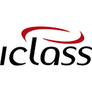

Carolina Bastos
Product Owner
Experienced Business/Requirements Analyst with a demonstrated history of working in the information technology and services industry. Requirements Gathering and Analysis, Change Request Management, Business Process Modeling. Agile methods, RUP, BPM.
Strong technical background.
Experience
-
Requirements LeaderFeb 2012 - Sept 2018, Rio de JaneiroOrder Management Services, Telecom industryCar Insurance Policy Systems, Insurance industry
-
Business AnalystAug 2010 - Feb 2012, Rio de JaneiroSenior Software EngineerJan 2009 - Aug 2010Rio de JaneiroCard Retail and Management Systems, Public Transportation industry
-
Senior Software EngineerMay 2008 - Jan 2009, Rio de JaneiroDeveloment of Value Added Services Systems, Telecom industry
-
Information AnalystNov 2005 - May 2008, Rio de JaneiroDevelopment of Healthcare ITS System, Healthcare industry
-
Java DeveloperAug 2002 - Feb 2005, Rio de JaneiroDevelopment of Salesforce Management System, Telecom industry
Skills
Agile RUP BPM
Order Management
OSS UML Java JavaScript HTMLCSSLinux SQL
Education
-
Langara College2019 – 2020Post Graduate Studies: Web and Mobile Development
-
Pontifícia Universidade Católica do Rio de Janeiro2003 – 2004Post Graduate Studies: Information Technology
-
Universidade Federal do Rio de Janeiro2000 – 2002Master Degree: Physics
-
Universidade Federal do Rio de Janeiro1996 – 2000Bachelor Degree: Physics